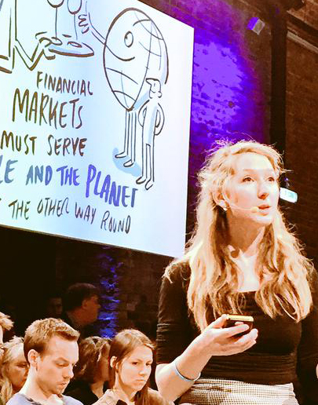

Can money be a force for good?
by Fran Boait. Originally posted on www.opendemocracy.net
There is more money in the world than at any other point in human history, so why doesn’t it reach the places that need it most?
Seven years after the global financial crisis that shook the world, youth unemployment in Spain and Greece stands at over 50 per cent. Globally, household debt stands at $40 trillion and rising, while one in six people in the US are struggling to get enough to eat.
Politicians are quick to reassure us that we are on the road to recovery—that we are ‘walking tall again.’ But for millions of ordinary people this doesn’t feel like a healthy economy in recovery, and of course it is not.
There’s no shortage of jobs that need to be done: we need to transition towards renewable energy sources and green infrastructure, and build new sustainable homes. We must adapt to climate change by protecting our communities against extreme weather and flooding. Dealing with these problems alone would create millions of jobs worldwide.
We have jobs to do and people to do them. So what’s the problem?
The problem is money. Apparently there isn’t enough of it. And yet, we have more money in the world than at any other point in human history. So where is it going and why doesn’t it seem to reach the places that need it most?
If you ask a person in the street ‘how is money created?’ they will probably look at you blankly. A couple might hazard a guess and say ‘the central bank.’ There’s a Chinese proverb that says: ‘The fish is the last to know water.’ Money is all around us, playing a role in almost everything we do, yet it can be difficult to pin down. We are swimming around in a society that depends on money—that’s become obsessed with money—but few of us know where it comes from or how it actually works.
Money is created out of thin air
In fact, central banks create around five per cent of the money in circulation in the form of cash. This is the case from the US to Ukraine, and from Italy to Iceland. The remaining 95 per cent is created by private banks when they make loans. When you go into a bank and take out a loan, the money is created out of thin air: ‘Ping!’ Money is created—and at the same time so is debt.
This money exists in the form of accounting entries in a computer system—a kind of electronic money that’s created when banks make loans, and destroyed when those loans are repaid. So most of the money we use is a kind of temporary money—bank IOUs that are being continuously created and destroyed.
This isn’t widely known or understood. Economics as it’s taught across universities today largely ignores how money is created. If you ask any economics student to explain the exact process of money creation, chances are they won’t have much of an answer. In fact over the last 40 years, banks—which are profit seeking corporations—have had the freedom to make as many loans as they want. Banks will choose where to lend based on their own profits and confidence, rather than the needs of society or the economy.
Hence, these banks allocate money disproportionately to property and financial markets, making economies skewed towards housing bubbles and the financial sector. As a result, we all end up under mountains of debt. Eventually the burden of debt becomes too much, defaults occur, and a financial crisis is precipitated.
A paper published in 2009 by the National Bureau for Economic Research in Cambridge, Massachusetts, showed that the best predictor of a financial crisis is a rapid build-up in the level of credit provided by the banks. The report drew from over 140 years of data across 60 per cent of the global economy.
After a crash, banks stop lending. But people still repay their debts, which removes money from circulation. So the money supply starts to shrink, leading to job losses, bankruptcies and further defaults on debt, tipping the economy into a recession.

Instability is built into the economy
By ceding the power to create money to banks, governments have built instability into the economy. The incentives that drive decision-making by banks guarantee that they will create too much money and debt until the financial system becomes unstable.
Financial regulation was supposed to address these problems, exploding from 37 pages in the Glass Steagall Act following the Great Depression in 1933 to over 9,000 pages in the US Dodd Frank Act in 2012 following the crash of 2008. So why hasn’t it worked?
The answer is that power is still tipped in the banks’ favour. Banks have enormous influence and resources which enable them to find loopholes, water down regulation and continue business as usual. In contrast, civil society organisations who work to protect the public interest in finance have limited resources, and cannot scrutinise 9,000 pages of new regulations to ensure that banks are behaving themselves.
A friend of mine who’s a bond trader laughed when I asked him whether regulation is effective at restraining the banks actions: ‘I know I’ve made illegal trades in the past,” he told me, “the regulation is so complicated you don’t even know you are doing it and the regulator will never check.”
Hence, in order to get a grip on the central issue of money creation we have to change the underlying structure of the financial sector. Abraham Lincoln once said that: “The privilege of creating and issuing money is not only the supreme prerogative of Government, but it is the Government's greatest creative opportunity.”
Positive Money
Positive Money is a campaigning organisation that advocates something similar: a sovereign money system in which the central bank would create new money to be spent into circulation via governments.
This would take away a vast amount of power from the banking sector, and allow banks to behave as most people think they do already: taking in savers’ money and lending it to borrowers. It would also realign risk and reward by making sure that people who want to keep their money safe can do so, while those who wish to make a return would take both the upside and downside of any risk taking. By reducing the 'moral hazard' intrinsic to the current system, this would put an end to ‘too big to fail banking.’
Under a sovereign money system the amount of money in the economy would no longer depend on the confidence of banks. Encouraging further indebtedness—the prime way in which economies are stimulated at the moment—would cease to operate. Governments would be able to keep the profits from creating a nation’s currency and invest them where they are most needed—to create a good society with excellent infrastructure, and a low carbon economy which is sustainable.
Civil society groups like Positive Money are not the only advocates of making money creation into a public good. For example in 2014, Martin Wolf, the chief economic commentator of the Financial Times wrote that:
“Printing counterfeit banknotes is illegal, but creating private money is not. The interdependence between the state and the businesses that can do this is the source of much of the instability of our economies. It could—and should—be terminated.”
Take interest in your money
But none of this will change unless people take much more interest in their money—whether by investing it in real things they believe in, signing petitions to stop banks from encouraging tax evasion, or joining a campaigning group that’s trying to change the financial system in radical ways. The only way to make money work for people is to make people see it as a resource to transform society, but that means changing our own relationships to money from negative to positive.
Money is meant to be a tool, a means to an end, but it has become an end in itself.
As ex-Wall Street Trader Sam Polk describes it, money has become an addiction. Income inequality is at an all-time high, but people in the top 0.1 per cent of the income distribution still feel they can never have enough.
How did we let money get so out of control? We all have issues with money, whether or not we care to admit them. For a lot of people in the campaigning world and in politics, money is a dirty word. But talking about our own, often negative, relationships to money is the only way to surface and address the bigger questions surrounding the role of money in society.
Could shifting who gets to create money from private to public hands also help to create a healthier relationship with money among individuals and in society at large? Let’s find out.
Fran will be presenting at the International Permaculture Conference, which takes place in London 8-9 September 2015. See details of Fran's presentation, How to build a better money system.